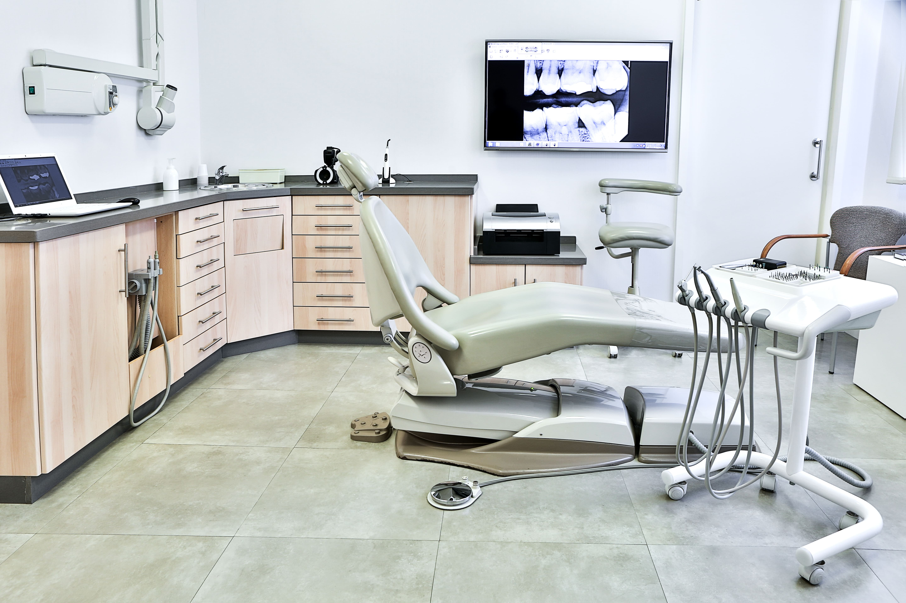

The Importance of Annual Dental Check-ups
Investing in lifelong dental health through regular check-ups is crucial for maintaining your smile and overall well-being.

Our smiles bring boundless joy, confidence, and well-being into our lives. As responsible individuals, it is our duty to ensure our dental health by prioritizing preventive care, and a crucial aspect of this care is the Annual Dental Check-up. This routine examination serves as a cornerstone in maintaining your dental health and happiness.
Early Detection of Health Issues
Annual Dental Check-ups provide dentists with the opportunity to detect potential health issues early on, leading to more effective treatments.
Preventive Care
Regular cleanings and check-ups protect you from serious dental diseases and contribute to your overall well-being.
Tailored Nutritional Guidance
Receive personalized dietary advice that supports your dental health and vitality at different life stages.
Dental Health Evaluation
Comprehensive examination of teeth and gums to prevent various health issues and promote longevity.
Holistic Well-being
Focus on overall dental health through expert guidance on environment and oral hygiene routines.
Addressing Behavioral Changes
Discuss and address behavioral changes that might indicate underlying health issues.
Ready to Prioritize Your Dental Health?
Schedule your Annual Dental Check-up today and take the first step towards lifelong dental wellness.
Book Your Appointment